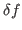

Hybrid Kinetic Plasma Model
Plasma systems generally support phenomena occurring on time scales spanning many orders of magnitude. This presents a difficulty for simulations, since phenomena of interest often occur on relatively slow time scales, but the accuracy and stability of conventional particle-in-cell (PIC) methods require the resolution of high-frequency modes. Computational techniques, including implicit methods, sub-cycling, and orbit averaging, have been developed to relax these time stepping constraints without modification of the governing equations. In order to obtain self-consistent couplings between particles and fields in implicit plasma simulation, an iterative process is used in which particles and fields are alternately updated. A preconditioner may provide a means of increasing the rate of convergence in this iterative process.
In this talk, we consider a second order implicit electromagnetic model using Lorentz ions along with drift/gyrokinetic electrons which has been developed to study low-frequency, quasi-neutral plasmas. Methods are explored to overcome two severe time stepping constraints present in this model - one due to compressional Alfvén waves and the other due to the necessity of resolving the ion gyromotion. By employing an implicit method, the most severe constraint due to compressional Alfvén waves can be eliminated. An iterative process is then necessary to solve the resulting implicit system.
The constraint due to the ion gyromotion is handled by the use of sub-cycling and orbit averaging with GPU accelerated particle pushes. Sub-cycling and orbit averaging techniques are both based on advancing particles over several micro time steps for each macro time step over which the fields are advanced. The two methods differ in that sub-cycling uses only the most current particle data to provide information on the sources for the field equations, whereas orbit averaging uses temporally averaged source data. An orbit averaged implementation, using a simplified field model, has been shown to successfully simulate finite Larmor radius (FLR) effects on ion acoustic waves for macro time steps much larger than ion cyclotron time scales. Modifications of the method will be explored for the inclusion of an electromagnetic field model along with the additional considerations arising from the implicit method.